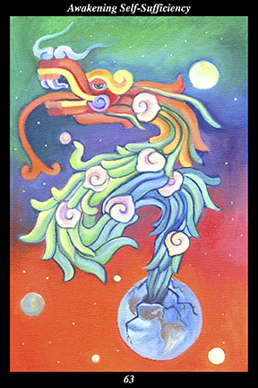

 | IMAGEA great feathered serpent hatches out of the earth as if from an egg. Its feathers are adorned with conch shells and it senses its surroundings with its bifurcated tongue. |
INTERPRETATION
This hexagram represents the great forces released by the accumulated efforts of spirit warriors over the ages. The feathered serpent symbolizes the collective intent and vision shared by spirit warriors in every time and every place. That it hatches from the earth as if from an egg means that the community of spirit incubating within the material world emerges as a living, dynamic force of creation. The conches adorning its feathers symbolize the call for all to join the community of spirit. Its bifurcated tongue symbolizes the duality that is one. That it uses its bifurcated tongue to sense its surroundings means that you are attuned to the universal presence of the masculine and feminine creative forces. Taken together, these symbols mean that you align yourself with those whose only need is to bring
benefit to their surroundings.
ACTION
The spirit warrior reverses the flow of power, channeling it inside instead of outside: by storing up power internally rather than expending it externally, we are able to both free ourselves of habits and gain control over our actions. This inner autonomy also extricates us from social influences that strive to mold us into obedient marionettes even as it allows us to be more tolerant of the deeper motives of those social influences. From the spirit warrior’s perspective, the original intent of religion is to awaken the higher soul to its potential freedom while purifying the lower soul of fear, greed, envy, and hate—just as the original intent of government is to awaken the higher soul to its responsibility to others while instilling in the lower soul the capacity for self-control. From this perspective, the fact that religion and government acquire ulterior motives over time and begin to act in their own self-interest merely demonstrates that they are managed by human beings and must be viewed accordingly. Similarly, the fact that all religions and governments strive to awaken the higher soul and purify the lower soul—even when they have forgotten how and why—simply demonstrates that the quest for metamorphosis is a universal and irresistible force. Just as our inner autonomy releases us from the trap of depending on social influences for our sense of self, in other words, it also releases us from the trap of not seeing how those social influences contribute, however unintentionally, to the gradual unification of humanity. Reversing the flow of power, we gain inner autonomy and, paradoxically, become one with the universal civilizing force.
INTENT
The wise become independent even from what they revere. Like children who are grown up and independent of the parents they love and admire, spirit warriors take their place among the community of spiritual equals. Because you use this lifetime to bring the most
benefit to others, you incubate the higher soul that is preparing to hatch from the lower soul: joining in the collective labor shared by spirit warriors in every time and every place, you contribute directly to both the fulfillment of humanity’s destiny and the creator’s vision. Becoming part of the universal civilizing spirit, you contribute directly to the founding of a free and harmonious world of equals right here within this world.
SUMMARY
Only the body marks the passage of time—for the soul, there is only this everlasting moment of growing. Let five rivers of energy come in through the senses, let them run together into a sea of growing power. Do not expend it on petty thoughts, moods, or goals. Send forth your rain clouds only to water the valuable. Condense intent into actions that foster peace and prosperity for all. Your success is inevitable.
THE LINE CHANGES
1° You look for a shortcut but do not find one—you would like to make the journey in a single step. This is admirable but not in your control—move according to the advice you are given. Even those who find the shortcut must spend the same amount of time refining their character.
2° It is difficult to find a lifelong ally who will aid you on your journey and treat you like a long lost companion. If you have found such a person, give them all your trust and respect. If you have not, keep your eyes and mind and heart open—make yourself worthy of attracting such a benefactor.
3° The higher must not desert the lower, although it does not concur with many of its actions. The lower must nourish the higher, although it finds it to often be unrealistic. Fuse the two into a viable whole and they will be able to ward off every kind of destruction.
4° Not all partnerships are self-evident at first—the strong may act weak, the flexible may act rigid. One nearby will make a good partner—look closer at those around you and peer beneath surface appearances. The right one may be ignoring you because you too are not acting like your true self.
5° The window of opportunity opens—higher and lower recognize one another and reunite as if no time had passed. Such profound feelings of timeless affection cannot arise in strangers’ hearts—it is no secret that halves are fated to rejoin. Be unsparing in your support and devotion.
6° In the midst of the marketplace, you are alone and undisturbed. The years have gone by and altered you in their passing. What you were unable to achieve all at once by sheer force of will has been accomplished without your noticing it—keep polishing until it is time to do something else.